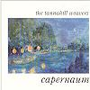

Celtic Lyrics Corner > Artists & Groups > Tannahill Weavers > Capernaum > The Brewer Laddie
|  | The Brewer Laddie |
| Credits : | Traditional; arranged by the Tannahill Weavers |
|
a) The Brewer Laddie
b) Cathkin Braes |
|
| Appears On : | Capernaum |
| Language : | Scots-English |
| Other Versions : | a) " The Brewer Lad " on Back Of The Moon's album Luminosity |
Lyrics :
Noo in Perth there lived a bonnie lad, a brewer tae his trade O
And he has courted Peggy Roy, a young and handsome maid O
He's courted her for seven years, a' for tae gain her favor
There came a lad oot Glesca toon wha' swore that he wad hae her
Chorus (after each verse)
:
And will ye come alang wi' me and will ye be my honey?
And will ye come alang wi' me and leave your brewer laddie?
They've rambled up, they've rambled doon, they've rambled through Kirkcaldy
And monies the nicht she's rued the day she left her brewer laddie
The brewer lad cam' hame at een enquiring for his honey
Her faither, he made this reply, "She's no been here since Sunday"
"If that be so, then let her go and I will never grieve her
I'm a lad that's free as you can see, a sma' thing will relieve her"
There's just as guid fish in the sea as ever yet was taken
I'll cast my line and try again, you're only once forsaken
The Glesca fellah's up and gane, the country he has fled O
He's left nae sark upon her back nor blanket on her bed O
The brewer lad still lives in Perth and there he brews guid ale-o
And he has found another lass and taen her tae his bed O
Ye lovers a', where e'er ye be, just let this be fair warnin'
Never slight your ain true love for fear ye get a' waur ane